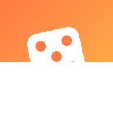
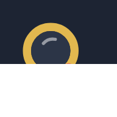
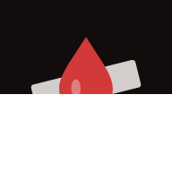
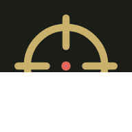
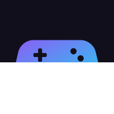
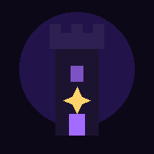
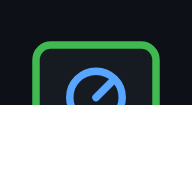

📱 Zsebjátékok
Apró játékok és egy Tarkov segédapp a telefonodra. Nyisd meg az egyiket, és tedd ki a kezdőképernyőre!

Véletlen kalandEgy gombnyomás, egy fura napi küldetés. Pontok, szintek, jelvények.

ZsebdetektívMinden nap egy új rejtély nyomokkal. Találd ki, ki a tettes!

A KódÉjjeli igazságosztó: csak bűnöst, ne hagyj tanút, ne bukj le. Hány napot bírsz ki?

Tarkov SegédEscape from Tarkov: élő flea árak, mit érdemes eladni, lőszertáblázat, questek, hideout és Tarkov idő.

Gamer ZsebHol a legolcsóbb a játék? Akciók, ingyen játékok, árfigyelés – plusz Tarkov kihívás-generátor.

Árnytorony100 emelet rejtvényekkel és főellenségekkel. Gyűjts össze minden szilánkot, és megnyílik alatta még 50 szint.

Gamer TárÉrzékenység-átváltó, játéknapló és saját tár linkeknek, képeknek, fájloknak – minden csak a telefonodon.
Hogyan teszem ki a kezdőképernyőre?
Android (Chrome): ⋮ menü → „Hozzáadás a kezdőképernyőhöz” / „Alkalmazás telepítése”.
iPhone (Safari): Megosztás gomb (□↑) → „Főképernyőhöz adás”.
iPhone (Safari): Megosztás gomb (□↑) → „Főképernyőhöz adás”.